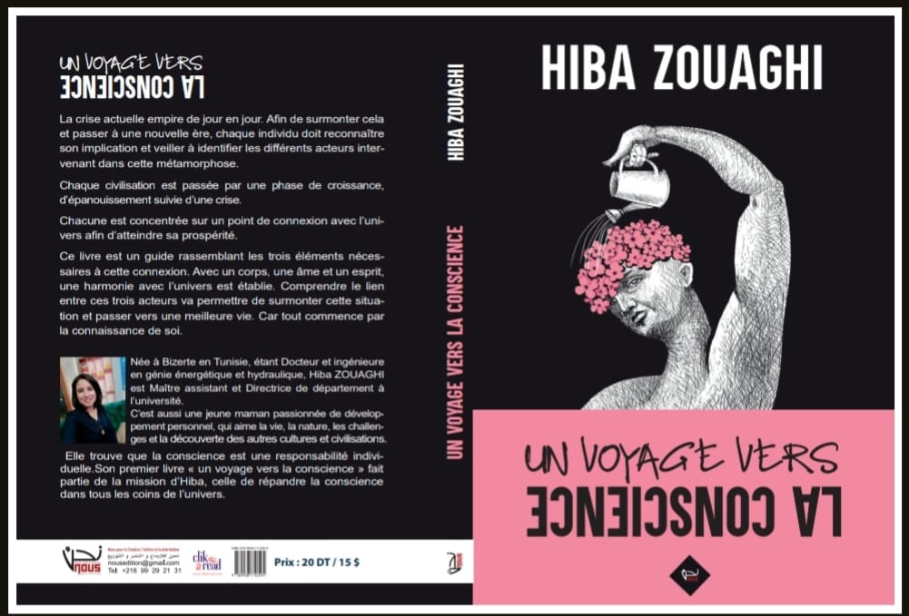

Hiba ZOUAGHI
Bienvenue dans mon portfolio. Je suis Hiba ZOUAGHI, Directrice Générale d'un Bureau d'études dans le domaine des énergies renouvelables et Manager de Nous Édition.
Je suis ravie de vous présenter mon parcours professionnel et mes compétences. Ce portfolio est conçu pour mettre en valeur mes projets, mes expériences, mon expertise ainsi que ma passion pour le coaching.
DIPLÔMES
- Diplôme de Baccalauréat en Mathématiques.
- Diplôme National d'ingénieur en Hydraulique.
- Diplôme de Mastère en Hydraulique.
- Diplôme de Doctorat en Génie Énergique.
CERTIFICATS
- Conception, dimensionnement, contrôle et suivi des installations solaires thermiques collectives.
- Etude de projets Photovoltaïques MT raccordés au réseau.
- Accréditation des laboratoire.
- Auditeur interne Management.
- QHSE.
- Lean management & Manufacturing, niveau W1/ Yellow Belt.
- Anglais (APTIS: British Council, niv B2).
RECHERCHES
- Zouaghi H, Harmand S, Ben Jabrallah S, 2015. Evaporation experimental study of liquid effluent after methanation.
Savoir Plus - Book Chapter : Zouaghi. H, Harmand. S, Ben Jabrallah. S. Recovery of waste farm after methanation by evaporation on inclined plate.
Savoir Plus - Zouaghi H, Harmand S, Ben Jabrallah S, 2017. Waste Water Recovery Using Infrared Lamp Combined with Heated Plate.
Savoir Plus - Zouaghi H, Ruiti M, Ben Thayer B, 2017. Treatment of Leachate from Urban Waste Using Coagulation- Flocculation and Adsorption.
Savoir Plus - Zouaghi H, Ruiti M, Ben Thayer B, 2017. Experimental Study on the Treatment of the Urban Waste
Leachates by Oxidation and Adsorption.
Savoir Plus - Zouaghi H, Ben Jabrallah S, Harmand S, 2018. Numerical and experimental study of evaporation of liquid effluent flowing on an inclined plate.
Savoir Plus
EXPERTISE
- Expert Environnement INSTM-APIP
PROJET: ARIBIOTECH, Sensibilisation des acteurs générateurs des déchets marins - Expert en Energie GIZ
Projet : Sensibilisation de la femme rurale sur l’utilisation des énergies renouvelables - Expert Energie IB SOL ENERGY
Projets : Etude et dimensionnement des projets photovoltaïques MT - Expert en ER
PROJET: Promouvoir la conscience Environnementale dans la région de Bizerte: Analyse des politiques et efficacité
ARTICLES


En plus des compétences dans le domaine du génie énergétique, je suis coach de vie.
CERTIFICATS
- CTL (Certified Trainer License – ICHD).
- PNL (Programmation Neuro-Linguistique - ABNLP).
- TOT : Training of trainers.
- REIKI : Praticien.
LIVRES
- 